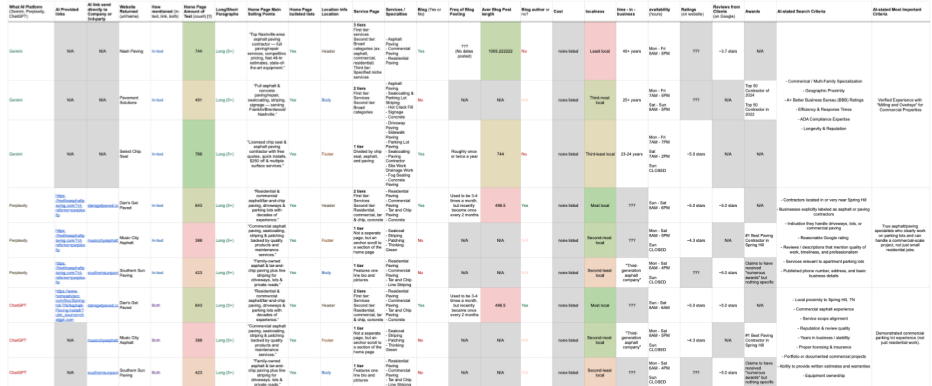

Employee Communication & AI Search Optimization UX Research for Semify
CONTEXT
Project Overview
Semify is a white-label digital marketing agency and software platform based in Rochester, New York. They tasked our team with two main challenges. The first of these challenges was to help with their internal communication systems. Over the past five years, their company has scaled rapidly from 30 to over 200 employees. While this growth has enabled expansion, it has also introduced complexity and inconsistency in how theirs teams would communicate across the organization. It was for that reason we were tasked with:
- Assessing the communication channels currently in use
- Designing a survey for our US employees to gather team perspectives on effective communication for Semify to deploy
- Analyzing results and identifying gaps and opportunities
- Presenting recommendations and proposed “communication protocols” to leadership
Our second task was to assist them with their research into AI Optimization. Over the past year, Semify conducted extensive testing last year to understand how AI-driven search experiences surface and prioritize businesses. This testing used standardized prompt sets to measure whether our customers appeared in AI-generated results. In order to further assist with this testing, we were tasked with:
- Evaluating how AI personas influence search outcomes by testing search visibility using customized personas rather than generic AI sessions, and identifying implications for how AIO strategies should evolve.
- Conducting usability research with real users, focused on personas #7 & 8—Male & Female young adults age 18-25 searching for a plumber
PROCESS
Two-Pronged Research
Once we completed out Human Subjacts Ethics Trainings and IRB Certifications, we were able to send out the survey we developed to the employees of Semify. The survey was developed using Qualtrics and consisted of 27 questions, including both closed and open-ended questions. About 56.8% of employees that received the survey responded to it (109 of 190 responded). After analyzing the data, we were able to identify some common patterns of Semify employees' perceptions (general and department-specific) of their communication channels. Using these patterns, we were able to design questions and general structured protocol for our employee interviews. The interviews we conducted were about 203- minutes long, conducted over Zoom, and done with 15 employees across Semify's operations, sales/marketing, finance/HR, and engineering departments.
Switching to our research on AIO, we started by prompting different LLMS such as ChatGPT, Gemini, and Perplexity to recommend certain companies / local businesses based on 1 of 8 personas. The personas we worked with were very specific and always included an age, gender, location, income, family or other close relations, location, living situation, and any other necessary information that matched their need. The things that they were looking for often falled in line of needing a plumber or a new roofer or some other sort of local service. Once we gathered the different search results from these different LLMS, we analyzed the data it gave us and tried to look for common patterns between what it recommended to see if it matched up with what the LLMS stated their philosophies were while searching. A sample of the spreadhsheets used to gather, code, and analyze this research is shown below:

Afterwards, we conducted usability interviews with gen Z participants who matched the demographics of our gen Z personas, 7 and 8. Our interview began with us prompting them to use AI to search for these businesses like the personas did then pick out which recommended service they were most drawn to out of the options. Afterwards, we questioned them on how they would search for these services on their own without prompting. This allowed us to understand not only if the values LLMs prioritized in finding local businesses / services matched with actual users, but also if Semify's prioritization of using AIO for Gen Z users also matched that of their users.
CHALLENGE
Switching Hats
One of the biggest challenges of this project was that while both parts were meant for the same client and employed many similar research methods, the content of both felt as if they were from two very different worlds. Working on both at the same time meant there was a need to contantly be switching gears. This often meant there were times where we struggled to remember where we left off in one project or what was needed next. This meant that constant organization and documentation was needed in order to keep both projects afloat without one of them getting lost.
This project also felt incredibly new to me since it was my first time using generative AI as a tool for research. While I had used it somewhat previously, I had never before used it in a professional context. Taking the time to properly understand how each LLM differentiated from each other, learning how best to prompt each one, and learning how to pick apart their responses took some getting used to, but I'm especially more than grateful for the opportunity now to understand the innerworkings of how they think a lot better.
IMPACT
Presentation and Final Recommendations Report
Our research was incredibly beneficial in providing Semify with actionable items to improve their internal communications and AIO efforts. For their communications, our results showed that while 80% of respondees reported that internal communication practices and platforms were effective, the other department-specific and platform-specific research we did showed there was still some room for improvement. Our final recommendations report requested that Semify hire ups would:
- Provide time for teams and departments to work on a communication strategy plan
- Provide more platform-specific training across all platforms
- Identify what is the central hub for information by department, project, and company-wide
- Make updates to their dashboard focusing on implementing a notification system, emphasizing updates and bug fixes, redesigning the dashboard to better address user-experience and usability, and provide more onboarding to staff
As for our research on AIO, our findings suggested that AI platforms seem to heavily favor websites depending whether or not the sites provide human-centered features, like establishing a sense of credibility and trust. The more accessible a website is, with a clear articulation of services and features, the more likely an AI platform will suggest it, so any clients they work with inthe future who want to prioritize AIO should focus on accessibility and credibility. During our usability interviews, we found that human users within the demographic of gen Z seemed to focus on search results that focus more strongly on localness, trust signals, and those that prominently place their pricing and services prominently. They also appear to have a larger demographic who are more opposed to AIO or would rather search on the web. Therefore, we suggest that when trying to market to Gen Z that companies place equal priority on AIO and traditional AIO.
REFLECTION
Questioning the First Answer
One of the biggest takeaways I got from this project was the importance of using multiple methods and perspectives when addressing a problem. This became especially apparent while working on Semify’s internal communications research. At first, the survey results suggested that communication across the company was largely effective, with 80% of respondents reporting that their communication practices and platforms worked well. However, looking more closely at department-specific responses and conducting follow-up interviews revealed that this overall percentage did not tell the entire story. Different teams experienced the company’s communication systems in different ways, showing me how easily a broad quantitative finding can overlook the nuances within a larger group.
I saw this same principle in our AIO research once we compared the recommendations from LLMs with the behaviors and preferences of actual users. While the AI research gave us insight into how these platforms might interpret a user's needs, the usability interviews allowed us to see where those assumptions aligned with or differed from real human behavior. It also showed that instead of taking our client's word of completely prioritizing AIO, it was better to challenge that idea and lean into our research showing which methods were actually preferred.
Throughout both projects, every survey, interview, and AI-generated result was able to challenge and build upon one another which ultimately created a more nuanced understanding any one source could provide on its own. This experience has made me more conscious of the importance of questioning initial findings, questioning hidden biases, searching for perspectives that may be missing, and allowing different forms of evidence to shape the conclusions rather than relying on the first answer that appears.